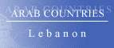
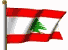

The Country & People of Lebanon
This page contains links to sites in Lebanon and Lebanon related sites.
For Middle East, North Africa, Arab and regional information visit Arab Countries
Hints:
- Use the "FIND" function in the Edit menu of your browser to search the page
- Use translating services in Chrome or Bing Bar in Internet Explorer to view page and/or linked websites in your language
General Info
* Business
* Culture
* Education
* History
* Media
* Organizations
* Travel
* Gateways
* Arab Countries
Lebanon, officially Republic of Lebanon, republic (1995 est. pop. 3,695,000), 4,015 sq mi (10,400 sq km), SW Asia, bounded by the Mediterranean Sea (W), Syria (N, E), and Israel (S). The capital is Beirut. Much of the terrain is mountainous, with two main ranges—the Lebanon in the west and the Anti-Lebanon in the east—paralleling the coast; the fertile Al Biqa valley lies between them. Until the disruption caused by the civil strife of 1975–90, Lebanon had a service-oriented economy, and Beirut, a free port, was the financial and commercial center of the Middle East. Through the 1980s the commercial and industrial life of Lebanon was in severe disarray, but by the early 1990s the economy had begun to revive. Banking, food processing, and the manufacture of textiles and chemicals are now economically important. Principal crops are citrus fruits, vegetables, olives, and tobacco. Remittances from Lebanese working abroad are an important source of foreign exchange. Most Lebanese are Arabs; there is a small Armenian minority. Arabic is the official language, but French and English are also widely spoken. The population is about 70% Muslim (mainly Sunni and Shiite, but there are other groups as well) and 30% Christian (mainly Maronite).
History
The site of the ancient maritime city-state of Phoenicia, the area later fell to successive Middle Eastern powers. Christianity was introduced under the Roman Empire and persisted even after the coming of Islam with the Arab conquest (7th cent.). In the late 11th cent. Lebanese Christians aided the Crusaders in the region. The area came under the Ottoman Turks in the 16th cent., and after the Turkish defeat in World War I it became part of a French mandate known as Greater Lebanon.
Since independence in 1945, Lebanon has been plagued by civil strife and problems with its neighbors. A member of the Arab League, it took little part in the Arab-Israeli Wars that followed Israel's independence in 1948, but the stage was set for future problems when many Palestinians fled Israel and settled in S Lebanon. Meanwhile, Lebanon's internal equilibrium was shaken (1958) by a rebellion against pro-Western policies, and U.S. forces were called in briefly.
In 1975 civil war erupted between leftist Muslims, aided by the Palestine Liberation Organization (PLO), and conservative Christians. In 1976 Syrian troops intervened, and a cease-fire was declared, but Israel and the PLO engaged in a sporadic border war in S Lebanon. In 1978, following a limited Israeli invasion, a UN peacekeeping force was placed in S Lebanon. Fighting continued, however, and in 1982 Israel invaded Lebanon, forcing out many members of the PLO and causing widespread devastation. A massacre of Palestinians by Lebanese Christians during the Israeli occupation of Beirut led to worldwide criticism of Israel and the establishment of a multinational peacekeeping force in Beirut.
In Oct. 1983 terrorist bombings killed over 230 U.S. Marines and French troops in their respective compounds, and both nations subsequently withdrew their remaining forces. The Lebanese parliament in 1988 proved unable to elect a successor to the Christian president, Amin Gemayel. Gemayel, on the expiration of his term, appointed a Christian general, Michel Aoun, as interim president, but Muslims challenged his legitimacy. In 1989 Arab governments brokered a peace agreement that produced a new constitution that increased the political power of the Muslim majority.
Elias Hrawi, a Christian, was elected president, but Aoun refused to step down and fighting broke out. In 1990, at Hrawi's request, Syrian troops attacked Aoun's position; Aoun fled to France, ending the civil war. Hrawi signed (1991) a treaty of friendship and cooperation with Syria that essentially guaranteed Syrian domination of Lebanon's foreign relations.
In 1993, 1994, 1996, and 1999 fighting again erupted between Shiite Hezbollah (Party of God) guerrillas and Israel in S Lebanon. Hrawi's presidential term was extended for three years in 1995, as the country continued to recover from years of heavy fighting which had crippled its infrastructure and economy.
Gen. Emile Lahoud was elected president in 1998.
In May 2000, Israel withdrew its troops from S Lebanon. The 2000 parliamentary elections brought the opposition back into power, and Rafiq Hariri became prime minister; he had previously held the office from 1992 to 1998. President Lahoud’s term was extended for three years by constitutional amendment in 2004 at the behest of Syria, which still maintains some 18,000 troops in Lebanon. The blatant meddling in Lebanese affairs caused a governmental crisis in Lebanon, eventually resulting in the resignation of Hariri’s government and the appointment of Omar Karami as prime minister. Karami had served as prime minister from 1990 to 1992. The UN Security Council denounced foreign interference in Lebanese politics and demanded that all foreign forces leave Lebanon.
In Feb., 2005, Hariri was assassinated in a Beirut car bombing, provoking a rash of anti-Syrian demonstrations and leading to increased international pressure on Syria to withdraw, although Hezbollah rallied its supporters in defense of Syria. Syria subsequently agreed to withdraw all its troops, and did so by the end of April. The crisis also led Karami’s government to resign (February), but the president subsequently asked Karami to form a new government, which he proved unable to do. In April, however, Najib Mikati, a pro-Syrian politician who was also responsive to some opposition demands, became prime minister and formed a new government.
Parliamentary elections in May–June resulted in a majority for the anti-Syrian coalition; Fouad Siniora, a former finance minister and an ally of Hariri, became prime minister. The new government moved, albeit cautiously, to reduce Syrian influence in the Lebanese security forces, and arrested several high-ranking security officials associated with the president as suspects in the assassination of Hariri. A UN investigation into the killing meanwhile implicated senior Lebanese and Syrian officials. By the end of 2005, however, a cabinet vote in favor of an international trial of the suspects in Hariri’s murder provoked a split in the government, with Shiite ministers refusing to attend cabinet sessions; the boycott lasted until Feb., 2006. The disarming of the Shiite Hezbollah militia, as demanded by the United Nations, slowed the resolution of the boycott, and the prime minister ultimately acknowledged the group as a “national resistance movement,” but many in the government continued to support disarming Hezbollah.
In July, 2006, Hezbollah forces captured two Israeli soldiers in fighting along the Israeli border, leading Israel to launch air attacks against targets in Beirut, Sidon, Tyre, and many other locales, place a blockade on Lebanon, and send troops into S Lebanon. Hezbollah respond largely by mounting rocket attacks against N Israel, including Haifa and Tiberias, but the its forces also offered resistance to Israeli troops, slowing their advance. A UN-mediated cease-fire took effect in mid-August, and by the beginning of October Israel had essentially withdrawn from Lebanon and ended its blockade. As much as a fifth of the Lebanese population was displaced by the conflict, and Israeli attacks destroyed much of the country’s infrastructure, a setback for the rebuilding that had occurred since the end of the civil war. Tourism and agriculture were among the sectors of the Lebanese economy most severely hurt by the fighting. Amnesty International accused both sides of war crimes in the fighting, mainly because of their attacks on civilians. The Israeli pullout left Hezbollah in position to proclaim its resistance and survival a victory, and emboldened it to insist on a re-formation of the Lebanese government that would give it and its allies a much stronger political position. Hezbollah also continued to resist disarming, as called for by the UN Security Council, and neither were the captured Israeli soldiers released. At the same time, however, the Lebanese army was deployed, albeit not forcefully, throughout S Lebanon for the first time since the civil war; UN peacekeepers were also deployed there. Israel, for its part, continued its military overflights of Lebanon, also despite the UN Security Council.
The political stalemate over the role of Hezbollah and its allies in the government led it and Amal, the other Shiite party in the cabinet, to leave the government, giving the government an interim standing under the Ta’if accord (because Shiites were no longer represented in the cabinet). The move also stalled the government’s approval of an international tribunal to prosecute Hariri’s suspected killers. Hezbollah subsequently mounted demonstrations and strikes calling for the government’s resignation, and their clashes between government and antigovernment partisans at times. The situation continued unsettled and unresolved into 2007, despite talks in March. Assassinations of anti-Syrian members of parliament also continued.
In May–Sept., 2007, there was fierce fighting in a refugee camp near Tripoli between the Lebanese army and Palestinian guerrillas aligned with Syria; a bank robbery by the group provoked the clash. More than 200 people died in the fighting before the government took control of the camp. . Also in May the United Nations approved an international tribunal to try suspects in the Hariri assassination; the tribunal first convened in Mar., 2009, but in April the four Lebanese officers who had been held since 2005 in connection with the case were released for lack of evidence. The political stalemate delayed the election of a successor to President Lahoud, who left office in Nov., 2007.
Although the parties agreed on army chief Michel Suleiman as a presidential candidate by early 2008, disputes over the makeup of the government postponed his election by parliament until May, 2008. The May agreement that led to a new president and cabinet was negotiated in Doha, Qatar, and was finalized only after the government's attempt to ban Hezbollah's private telephone network led Hezbollah to attack its Lebanese opponents in Beirut and elsewhere. After a week of bloody fighting, the government rescinded its ban. A new government, with Siniora as prime minister, was finally established in July, 2008; Hezbollah and its allies received enough cabinet seats to give them veto power over government decisions. In September, an agreement was signed to end sectarian fighting in Tripoli, which had sporadically continued there between Sunnis and Alawites since May. The following month, Syria formally established diplomatic relations with Lebanon for the first time; Syria's previous failure to do so had been seen as a rejection of Lebanese independence.
Parliamentarly elections held in June, 2009, resulted in a victory for the pro-Western Sunni, Druze, and Maronite coalition, led by Hariri's son, Saad. Attempts to form a coalition government proved difficult. In September Saad Hariri stepped down as prime minister designate, but he was renamed to the post, and a national unity government that included Hezbollah and its allies was formed in November.
Syria's influence in the country was again evident in 2010, as Hariri traveled several times to Damascus and, in September, said that he had been wrong to blame Syria for his father's assassination.
In Aug., 2010, Hezbollah asserted that it had evidence implicating Israel in the assassination; the accusation was apparently prompted by information that the tribunal had found indications that some Hezbollah members had been involved.
The political stalemate delayed the election of a successor to President Lahoud, who left office in Nov., 2007. Although the parties agreed on army chief Michel Suleiman as a presidential candidate by early 2008, disputes over the makeup of the government postponed his election by parliament until May, 2008. The May agreement that led to a new president and cabinet was negotiated in Doha, Qatar, and was finalized only after the government's attempt to ban Hezbollah's private telephone network led Hezbollah to attack its Lebanese opponents in Beirut and elsewhere. After a week of bloody fighting, the government rescinded its ban.
A new government, with Siniora as prime minister, was finally established in July, 2008; Hezbollah and its allies received enough cabinet seats to give them veto power over government decisions. In September, an agreement was signed to end sectarian fighting in Tripoli, which had sporadically continued there between Sunnis and Alawites since May. The following month, Syria formally established diplomatic relations with Lebanon for the first time; Syria's previous failure to do so had been seen as a rejection of Lebanese independence. Parliamentarly elections held in June, 2009, resulted in a victory for the pro-Western Sunni, Druze, and Maronite coalition, led by Hariri's son, Saad. Attempts to form a coalition government proved difficult. In September Saad Hariri stepped down as prime minister designate, but he was renamed to the post, and a national unity government that included Hezbollah and its allies was formed in November.
Syria's influence in the country was again evident in 2010, as Hariri traveled several times to Damascus and, in September, said that he had been wrong to blame Syria for his father's assassination. In Jan., 2011, as an indictment from the Hariri assassination tribunal prosecutors neared, Hezbollah called on Prime Minister Hariri to repudiate the tribunal, which was expected to accuse members of Hezbollah of involvement in the crime. When the prime minister refused, Hezbollah and its allies withdrew from the government, forcing negotiations to establish a new government; they supported former prime minister Mikati, who as prime minister designate sought to establish a unity government, but Hariri's coalition announced it would not join the government, which was finally formed in July. Later than month, the Hariri tribunal delivered confidential arrest warrants to the Lebanese state prosecutor; its indictment of four Hezbollah members was made public the following month, and that of a fifth member was revealed in Mar., 2012.
Lebanon was increasingly affected by the civil war in Syria as 2012 progressed. The conflict sparked sporadic violence between Lebanese Sunnis on the one hand and Alawites and Shiites on the other. Tens of thousands of Syrian refugees also fled to Lebanon, with some 340,000 there by Mar., 2013. In Oct., 2012, a senior intelligence official who had led the investigation into Hariri's assassination was himself killed by a car bomb; his death provoked antigovernment protests and violence between Sunnis and Shiites. In Mar., 2013, Mikati resigned as prime minister as a result of disagreements within the coalition over a number issues. In April, Tammam Salam was asked by the president to form a new government, but Mikati's caretaker government remained in office for almost a year as Salam was not able to form a national unity cabinet until Feb., 2014.
In May, 2013, the June parliamentary elections were postponed until late 2014 due to deadlock over electoral law changes and to the effects of the Syrian civil war. By mid-2013 Hezbollah was playing an open military role in Syria in support of its government; the spillover from the Syrian civil war led to increasing sectarian violence in Lebanon. In Aug., 2014, the Lebanese army fought with Islamist militants for control of a town on the Syrian border. Lebanon also experienced an enormous influx of Syrian refugees, whose numbers exceeded 1 million by Oct., 2014, when the country began restricting entry from neighboring nations. President Suleiman's term in office ended in May, 2014, without agreement among the political parties on a successor, a situation that continued into 2015, and in Nov., 2014, the parliament voted to extend its members' terms until 2017.
********
Copyright (c) 2012 Columbia University Press.
Used by permission of Columbia University Press.
General Info
Cities, towns, municipalities, places, flag, maps, useful Information....
Business
Economy, reports, statistics, banks, directories, jobs, investment, promotion....
Culture
General resources, heritage, art, literature, photography, cinema, music, song, dance, cultural, scientific,
environmental, sporting entities & info....
Education
Schools, colleges, academies, universities, polytechnics, institutions, research, resources, projects....
History
Ancient & modern history, human rights, politics & political parties, related sites, articles....
Media
Newspapers, magazines, news, newsletters, news agencies, radio, TV, internet, articles, reports, cartoons....
Organizations
Government, ministries, overseas missions, embassies, corporations, organizations, industrial entities, centers,
public hospitals, institutions, societies, foreign entities....
Travel
Airlines, air, sea & coach charters services, travel, tours, guides, hotels, resorts, inns, hostels, health,
travel tips, weather....
Gateways
Gateways, search engines and directories to country related sites and information....
Arab Countries
Arab World: Middle East, North Africa, Arab and regional information. Resources to other Arab countries....
About Lebanon
General Information Also see Travel
- AME Info Geography, people, government, economy, communication, transportation
- ArabInfo Overview, government, history, links
- ArabNet Overview, history, geography, business, culture, government, transport, tour guide, links
- Atlapedia Geography, climate, people, demography, religion, education, modern history, currency, other information...
- BBC Country Profile Key facts, figures and dates
- Britannica.Com Country info, land, people, economy, society, government, history, culture, maps, statistics, links....
- CIA World Factbook Map, geography, people, government, economy, communications, transportation, military, issues
- Country Reports Economy, defense, geography, government, people, anthem, map, news, weather, links....
- Encarta OnLine Info, land & resources, population, economy, government, history, other related items, links....
- Encyclopaedia of the Orient Geography, politics, economy, health, education, religion, people, history, anthem, cities....
- Expedia Almanac, fast facts, communications, on business, health & safety, transportation, traveller's directory
- Focus OnLine Lebanon - Capital of the Middle East. General info, regions, tourism, cuisine, music, maps....
- Info Please General info, map, geography, government, history, land & people....
- Lebanon Home Page History, cities, regions, industry, attractions, community
- Lebanon in a Panoramic View A virtual visit
- MidEast.Com Beirut, Baalbeck, Tripoli, Aanjar, Byblos, Sidon, Jeita grotto, Zahle, the Cedars, Beiteddine, Tyre....
- MidEastUK Introduction, cities, essentials, services, slide show, map
- Nation By Nation Info, government, human rights, news, geography, history, people, links....
- US Library of Congress Everything you ever wanted to know about Lebanon....
- World66 General info, cities, history, people, economy, getting around, getting there, links....
Cities, Towns, Municipalities & Places
- Ain-Ebel Known as Arousset el Jnoub, the Bride of the South
- Ainab Municipality Classified as a tourist village
- Alma-El-Chaab A southern town in Tyre county on a lovely hill surrounded by valleys and enclaves
- Aley Aley city, photos, guide, gateway, services....
- Amioun Administrative center of the el Koura District. History, archeology, gallery....
- Anjar In the middle of the Bekaa valley
- Anjar Omayaad ruins in Lebanon
- Ankoun Information about its geography, social and cultural life
- Batroun One of the oldest cities of the world and it's the capital of the Caza....
- Bintjbeil More than 50% of Bint Jbeil's people have migrated....
- Brummana Lebanon's luxury heaven in the mountain
- Debel Churches, places, families and photos
- Dhour Choueir A village well known for its breathtaking scenery, populous pine trees, four season's weather, and friendly locals
- Joun Spread over seven hills at 400-500 meters above sea level overlooking Saida
- Kalamoun Municipality, phone directory, photo gallery, history
- Lwaiza A village in South Lebanon
- Miziara Bringing Miziarians together. History, picture gallery....
- Mlikh History, photo gallery, places....
- North Lebanon Villages & towns....
- Saida (Sidon) History, government, entertainment, education, directory....
- Tripoli News, history, social, tourism, business, sport, gateway
- Tripoli City Past & Present, media
- Zahle “The city of Wine and poetry”, the administrative and commercial capital of the Beqaa valley
Flag, Maps, Useful Information....
- Cellular News Cellular coverage map, systems, frequencies....
- Ethnologue Languages
- Flag Description, meaning, history, interesting facts and other flags
- Flag Explanation, historical, military & political flags....
- Wine of Lebanon Lebanon is one of the oldest sites of wine production in the world
- World Atlas A brief description, fast facts, flag, landforms, maps, traveller info, weather
- World Clock Local time, sunrise, sunset, GMT offset, daylight saving....
- World Paper Money Paper currency since 1944
General Info
* Business
* Culture
* Education
* History
* Media
* Organizations
* Travel
* Gateways
* Arab Countries
Business and Economy
General, Economy, Reports & Statistics
- Australian Department of Foreign Affairs and Trade Fact sheet (pdf) & travel information....
- Beirut Stock Exchange Markets, listed companies, authorized dealers, bulletins, news....
- Bilateral Relations with Japan Diplomatic, investment, economic cooperation, residents....
- Chamber of Commerce and Industry of Beirut To promote all sectors and activities of the private economy in Lebanon
- Lebanon and the IMF Position in the fund, reports....
- MBendi Business information, news, industries, events
- Muslim Trade Network Trade reference directory and guide....
- Ports Focus Ports, harbours, marinas....
- US Department of Energy Analysis, information, oil, natural gas, coal, electricity....
- US Department of State Country commercial guide 2001 (pdf)
- World Bank Overview, news & events, data & statistics, publications & reports, development topics, projects & programs, Public Information Center
Banks
- Al-Baraka Bank Promote the concept and use of Islamic Banking practice
- Allied Business Bank A medium sized bank according to Lebanese standards
- Banque Audi All facets of commercial banking, private banking, investment banking and retail banking
- Banque du Liban Safeguarding of the currency in order to ensure a basis for sustained social and economic growth
- Banque Saradar Products & services, financial markets, Netbank
- Byblos Bank Provider of financial services to small and medium size enterprises
Directories, Job Opportunities
- Career Lebanon Online recruiters
- First Lebanon Detailed, accurate and updated information about Lebanese companies. Information about Lebanon
- JC Conseil Recruitment & Executive Search....
- Made in Lebanon Commercial guide, fairs/exhibitions, industrial directory. Cedar's Land: History, culture, cuisine....
Investment & Promotion....
- Association of Lebanese Industrialists Concerted and balanced effort at promoting and developing industry in Lebanon
- Investment Development Authority To attract private capital investment in support of national development and reconstruction
- Window Arab World Internet advertising in Lebanon
General Info
* Business
* Culture
* Education
* History
* Media
* Organizations
* Travel
* Gateways
* Arab Countries
Art, Culture & Sport
General Resources, Heritage....
- Al-Mashriq - The Levant Cultural riches & gateway
- Beiteddine Festival Welcomes the most talented and renowned international artists
- Nisrin Food, photos, general information
- Tyre Festival Encourage talents in various cultural domains
Art, Literature, Photography, Cinema....
- Ameen Rihani Founder of the Arab American literature. Biography and works....
- Gibran Khalil Gibran Works, art, museum. Bsharri, biography....
- Joseph Matar Lebanon Art - Home of the artist painter
- Mariam Hallab Painter
- Marina Kharma Painter. Biography, gallery, info.... Closer Observation of Nature
- Tarek Atrissi Graphic designer
- Galerie Manon Works of various painters & sculptors
- One Fine Art Painters, sculptors, photographers, conceptual art, poets - Biographies and works
- Arab Film Distribution - Lebanon Features a wide range of narrative films, documentaries, visual essays and ethnographic films
- Internet Movie Database Movie & TV reports
Music, Song & Dance....
- Al-Mashriq - The Levant Famous artists. Biography, music, songs, films, discography
- Amin Sultan One of the most talented Middle Eastern singers in the United States
- Darine Hadchiti Profile, library, press, fan club
- Farid El-Atrash The king of the lute - An actor, a singer, a composer....
- Fairouz Information on Fairouz and the Rahbani brothers
- Fairouz Life, history, achievements, plays, movies, concerts
- Nancy Ajram Biography, fans, news, galleries, magazine covers, press releases
- Nicola Osta Singer. Archives, photos, posters, MP3....
- Setrak Setrakian Composer & Pianist
- Ziad Rahbani Theatre, music & songs
Cultural, Scientific, Environmental, Health, Sporting Entities & Info
- Italian Institute of Culture To strengthen the cultural ties between Lebanon and Italy
- Northen Ohio Lebanese American Association To serve the Lebanese-American community in Ohio through cultural, educational, humanitarion, and social activities
- Animal Info Threatened species, environmental and social data
- AquaStat Information on quantity and quality of freshwater and its availability
- BirdLife To determine the priorities for bird conservation in the region
- LebaneseDoctors A resource for medical related topics and services....
- Al-Ansar Sporting Club Consists of motivated young players with high ambitions
- Dive Lebanon The complete guide to Scuba Diving in Lebanon
- Nejmeh Sporting Club One of the glorious Football [Soccer] teams in Lebanon
General Info
* Business
* Culture
* Education
* History
* Media
* Organizations
* Travel
* Gateways
* Arab Countries
Education
Schools, Colleges, Academies, Universities & Polytechnics
- American Community School An American-style education for Lebanese and international families
- Antonine Sisters School To provide quality education, to raise dynamic Christians and to develop responsible citizens
- Brummana High School An international day and boarding school of all-round excellence in academics, the arts and sports
- Centre International des Sciences Techniques A private technical institute
- Collège des Apôtres La visée educative embrasse la formation spirituelle culturelle, scientifique et sportive de l'élève
- Cortbawi's Institution Aims at constituting a place where thinking and action meet for the revival of the community spirit
- American University of Beirut Emphasizes scholarship that enables students to think for themselves
- Beirut University The first distance learning academic institution in the Middle East
- Beirut Arab University Providing opportunities for higher learning to Arab students
- Haigazian University Offers quality education at a fair and affordable cost
- Lebanese American University It is at the crossroads of many interacting educational systems
- Notre Dame University Will meet the immediate and subsequent spiritual, scientific and cultural requirements of our youth
- La Sagesse University The first higher institute of Law
- Université Antonine
- Université Libanaise Elle est la seule université publique des 24 établissements de l'enseignement supérieur au Liban
- Université Saint-Joseph
- University of Balamand Committed to raising future generations in the immutable Eastern values....
Institutions & Organizations
- Hariri Foundation Its mission is to make education a means for the development of the young in Lebanon
- International Education Council University Distance Learning & Guiding Programs
- Old Scholars Association Brummana High School - Events, history....
- Rawdat Al-Fayhaa Alumni Association To provide a way of communication between the Alumni club and its members
Research, Resources & Projects
- National Council for Scientific Research Assigned with the initiation and support of scientific research programs and activities
General Info
* Business
* Culture
* Education
* History
* Media
* Organizations
* Travel
* Gateways
* Arab Countries
History, Human Right & Politics
Ancient & Modern....
- BBC Timeline A chronology of key events
- People of Lebanon Inform on a number of issues, including the modern history of Lebanon, humanitarian issues, politics, war crimes and international law
- Political Geography Land and people, economy, government, history....
- Rafik Hariri Late Prime Minister of Lebanon - Biography, family, initiatives, accomplishments, cabinet statements, statesmanship....
- World Statesmen Flags, chronology, rulers, governors, ministers, commissioners....
Human Rights, Politics & Political Parties....
- Amnesty International News, reports, urgent action. Latest annual report....
- Human Rights Watch Human rights developments & report
- US Department of State Country reports on human rights practices
- Campaign for Good Governance in Lebanon To expose the corruption and other ills befalling the government and society....
- Free Patriotic Movement Official website
- Lebanese Democratic Movement Towards a new advanced society, and a more developed state
- Lebanese Forces Party To resist foreign occupation and the concerted effort to destroy all that the country has stood for....
- Lebanese Maronite League
To help the community exercise its influence and underscore it's contributions
- Lebanese Popular Conference Kamal Chatila....
- National Liberal Party To serve Lebanon by propagating the liberal and democratic principles of Camille Chamoun
- Progressive Socialist Party Aims at building the society on democratic bases
- US Committee for a Free Lebanon A human rights watch group and a humanitarian activist organization....
- World Lebanese Organization Self determination of Lebanon's Christians, human rights and democracy for people in the ME
Related Sites, Articles....
- Al-Bushra - Arab American Roman Catholic Community What do you know about Lebanon? Plenty of interesting articles....
- Constitution Background, history & news
General Info
* Business
* Culture
* Education
* History
* Media
* Organizations
* Travel
* Gateways
* Arab Countries
Visit Arab Media for satellite stations & Arab newspapers
Media
Newspapers, Magazines....
- Al-Afkar Weekly magazine
- Al-Ahed Weekly newspaper
- Al-Akhbar Daily newspaper
- Al-Aman Weekly political magazine
- Al-Anwar Daily newspaper
- Al-Diyar Daily newspaper
- Al-Intiqad Weekly political magazine
- Al-Kifah Al-Arabi Weekly magazine
- Al-Liwaa Daily newspaper
- Al-Markazia Daily newspaper
- Al-Mawed Weekly cultural, social magazine
- Al-Mustaqbal Daily newspaper
- Al-Nabaa Weekly magazine
- Al-Nahar Daily newspaper
- Al-Noujoum Monthly magazine
- Al-Safeer Daily newspaper
- Al-Tamaddon Weekly political newspaper - Tripoli, Lebanon
- Al-Watan Al-Arabi Weekly magazine
- Beirut Times Weekly cultural, social and political newspaper (USA)
- Femme Magazine Le premier mensuel feminin libanais
- L'Orient Le Jour La Journal
- La Revue du Liban Hebdomadaire d'informations en ligne du Liban
- Magazine L'hebdo qui fait le poids
OnLine News, Newsletters, News Agencies....
- Al-Markazia Central News Agency - Online Arabic Newspaper, covering political, social, economical and local news about Lebanon
- Beirut News Totally Dedicated to Lebanon and the internet community
- Daily Star Online news....
- Lebanese Community News Journal Online Lebanese Newspaper that uplifts Lebanon's image in the U.S. & worldwide
- Lebanon-Online Internet magazine. Up to the minute political, business, sports, entertainment, and cultural news....
- Lebanon Press Online news
- Lebanon Wire Live news....
- Monday Morning Weekly political news magazine
- National News Agency News & archives....
- Teckies Online magazine - Computers & internet
- TerraNet News, business, sports, health & science, technology, entertainment, offbeat news, travel
- Washington Post News & references
- Yahoo full news coverage
Radio, TV, Internet....
- Al-Manar TV Different , compared to the general visual media in Lebanon
- Al-Nour Radio Live radio, News....
- Beirut Nights Radio Best radio in Eurodance, trendy Arabic music, French 80s and other Mediterranean music
- Future TV Network Programs, news, debates
- Lebanese Broadcasting Corporation (LBC) A general entertainment channel with a core target market being the ‘Lebanese Family
- Lebanon Voice Chat, News, Events, Horoscope, eCards, Jokes, Radio, Polls, Lebanon, Gallery....
- Murr TV - MTV Local, regional and international news, games, sport, live TV
- National Broadcasting Network (NBN) Debates on political, social, cultural, business and sports, documentaries and thematic programs
- Radio Free Lebanon Live radio....
- Radio Nostalgie Liban Programmes, Evenements, Concours, Cinema, Musique, live Radio
- Radio One Live radio....
- Radio Orient Live radio, schedule....
- Radio Voix de la Charité Service de l'homme et de la société
- Radio Voix du Liban AM873, FM93.3
- Leb Journalo The place where every Lebanese has something to say
- Lebanon Undernet To provide IRC users with a good place to meet, exchange ideas, and generally have fun
Articles, Reports, Cartoons....
General Info
* Business
* Culture
* Education
* History
* Media
* Organizations
* Travel
* Gateways
* Arab Countries
Visit Arab Organizations for Pan-Arab, Middle East, North Africa and regional organizations
Government & Organizations....
Government, Ministries, Overseas Missions, Embassies....
- Central Administration for Statistics Stock-listing the statistics established by several administrations
- Central Inspection Board Monitor the actions of the public administrative departments....
- Chiefs of State and Cabinet Members
- Political Leaders Dates and figures of the leadership since 1943 (with pictures)
- Civil Service Board Administrative reform
- Le Conseil Constitutionnel
- Court Audit Empowered to exercise judicial supervision over the expenditure of public funds
- Council for Development and Reconstruction
Preparing general plan for the country, , implementing projects....
- Government of Lebanon The Presidency, Rebuild Lebanon, news, ministries....
- Internal Security Forces Securing the citizens' welfare and the safety of their properties .
- Lebanese Armed Forces The main factor of national unity and stability, the shield of the state against potential dangers
- Lebanese Parliament
- Office of the Minister of State for Administrative Reform Optimal and coherent introduction of Institutional Development (rehabilitation and reform) and Information Technology
- Ministry of Agriculture Providing the necessary information pertaining to the Lebanese agriculture sector
- Ministry of Economy and Trade Information to facilitate trade transactions and support export promotion.
- Ministry of Environment Controlling all forms of pollution, deforestation, protection of fauna and flora, and urbanization....
- Ministry of Finance
- Ministry of Foreign Affairs and Emigrants
- Ministry of Higher Education
- Ministry of Industry
- Ministry of Interior and Municipalities >
- Ministry of Justice
- Ministry of Public Health
- Ministry of Telecomunications >
- Ministry of Tourism Practical & detailed information about all aspects of the country
- Embassy of Lebanon - Ottowa, Canada Consular, general, tourism, business, news, links....
- Embassy of Lebanon - Washington, USA Info, consular affairs, tourism, culture, business, statistics, news, links....
- Honorary Consulate of Lebanon in Monaco
Corporations, Organizations, Public Hospitals and Industrial Entities
- Al-Koura Hospital To offer a service that complies to all international standards of quality in a family surrounding
- Chronic Care Centre Treatment and follow-up of childhood chronic diseases
- Dar Al-Ajaza Al-Islamia Hospital A charitable human institution offering common medical aid
- LebanonHealth A listing of over 16,000 healthcare providers and health related products in Lebanon
- Sahel General Hospital Extending services to a population exceeding 700 thousand
Centres, Institutions, Societies....
- Al-Mabarrat Charitable Association Striving for the sponsoring of the orphan, his upbringing, his education....
- Al-Siraj Al-Munir Islamic Association Teaching Islam through understanding the Quran and Sunnah....
- Centre des Archives Nationales
- Community of Maryam & Martha Humanitarian association in Lebanon that caters for women's need for shelter, rehabilitation, and social reintegration
- Dar El-Fatwa >
- The Druze Orphanage Provides orphans and children of broken homes with lodging, food, clothing and schooling
- Friends of the Disabled Association To provide care for persons with mental retardation and other disabilities
- Lebanese Centre for Policy Studies Research on issues relevant to the political, social, and economic development
- Lebanese Red Cross Humanity, impartiality, neutrality, independence, voluntary service, unity, universality
- Popular Aid Committee Medical and social centres in Beirut and all over Lebanon
- The Social Welfare Institutions - Dar Al-Aytam Concerned with the conditions of orphans
Foreign Entities
- Australian Embassy Consular section, trade commission, visa and immigration services, info about Australia....
- British Embassy The embassy offers consular, commercial and visa services to members of the public....
- French Embassy
- German Embassy
Commercial, consular, cultural, press departments....
- Italian Embassy Consular office, economic, cooperation & commercial office, news, events....
- Japanese Embassy Bilateral relations, trade with Japan, grassroots grant, profile of Japan, visa requirements....
- Netherlands Embassy Commercial, consular, cultural, tourism, & education sections, Netherlands, links....
- US Embassy Consular, commercial and public affairs sections, journals, articles....
- British Counsil Library and information services, events, news, conferences, learn English
- Lebanese American Professional Society Network - LAPSNET Dedicated to the Lebanese professional community abroad
- United Nations United Nations Development Programme
- USAID Assistance to Lebanon....
- USAID Assistance to Lebanon....
- World Health Organization Tobacco & health, socio-economic situation
General Info
* Business
* Culture
* Education
* History
* Media
* Organizations
* Travel
* Gateways
* Arab Countries
Travel & Tourism
Airlines, Air, Sea & Coach Charters Services
- Middle East Airlines - MEA Timetable, service info, cedar miles, special offers, fleet, news....
- Trans Mediterranean Airways - TMA Round the world all cargo service. Air services linking USA with Middle East
- Beirut International Airport Linking Lebanon with the outside world
Travel, Tours, Guides.... More country info
- Bookinn Access to hotels, car rentals, restaurants, night clubs and links to information that are of interest....
- DiscoverLebanon Explore all aspects of our country whether you are a native or a tourist
- Downtown Beirut Tourist information, Beirut map, famous Lebanese, night clubs, bars and pubs, restaurants, hotels, pictures
- Ma3loumat Information - Lebanon Handbook
- LebGuide Information about Lebanon, a detailed history of the country, a presentation of the main touristic sites, Lebanese cuisine
- ProMax Sports Discover nature while doing sports, sharing cultures, experiences, and having fun
- Ski Faraya Mzaar Skiing holidays in the Faraya Mzaar resort - Ouyoune El Siman
- Ski-in-Lebanon ski packages, ski lessons, transfers, and hotel accommodation
- SkiLeb Skiing & snowboarding in Lebanon. Country profile, history of skiing
- Syaha Online
Wining and dining, Hotels, Furnished apartments, Where to go, Travel agencies, Car rentals, Shopping, What's on, Useful Information,,,,
- Travel to Lebanon.Com
Travel guide. Tourism, arts & culture, nitelife, business traveller, cuisine, Beaches & Waterparks, festivals, museums....
- Travel to Lebanon.Net Hotel Selection, Apartment Rentals, Sight Seeing Tours, City Map....
- Lonely Planet Travel information, maps, photos, background historical and cultural information
- Middle East Travel Accommodation, history, after hours, travel info, addresses, cities & sights, business....
- Travel Guide General & travel info, money, duty free, health, accommodation, visas....
- Travel Puppy Lebanon travel information & guide
- World Travel Guide Accommodation, addresses, business, climate, essentials, resort, social, travel
Hotels & Restaurants....
- Acroplis Hotel Jounieh bay, includes a guide to Lebanon
- Barouk Palace Hotel Shouf region - A resort where guests can enjoy a variety of facilities without having to leave the hotel
- Beirut Hotel "Best hotel, best service, best of Beirut"
- Beirut Shortstay Hotels, holiday rentals, tour excursions, airport transfers and chauffer driven services
- Chtaura Park Hotel Invigorating climate, healthy clear air with pleasant surroundings....
- Holiday Suites Hotel & Beach Resort On the water front of the Mediterranean Sea Coast in the bay of Jounieh
- M?venpick Hotel & Resort Beirut - Adjacent to the legendary Corniche Promenade
- Paradise Residence Hamra - Receptionist, security, room-maid and porters services are available round the clock
- Rest House A walking distance from the major shopping centre and the famous ruins of Tyre
- Rotana Hotels, Inns & Suites Beirut
- Suite Hotel Uniquely positioned on the rising hills of Beirut , with views of the beautiful Mediterranean - Jal El-Dib
- White Tower Hotel Ideally located halfway between the city centre of Beirut and the famous area of Kaslik
- All Hotels Hotels, description & rates
- Hotels Travel Hotels directory & tourist information
- Lebanon Hotels (.com) Booking at discount rates in Beirut hotels and other lebanese regions
- Lebanon Hotels (.net) Hotels directory
- Lebanon Hotels Travel Guide Offers hotels and resorts online reservations
- New Steps Travel & Tourism Hotel Reservation in Lebanon, restaurants, nightlife, touristic sites....
- Burj Al Hamam - Fawzi "The Art of Lebanese Cuisine" - Restaurant
Health & Travel Tips
- Foreign & Commonwealth Office Travel information, country advise, latest travel updates....
- Travel Document Systems Passports, visas, travel documents
- US Consular Information Visa, health, crime/drug penalties....
Weather....
- Weather Underground Temperature, humidity, pressure
- Yahoo Weather By city. Forcast, sunrise, sunset, humidity, wind, dewpoint....
General Info
* Business
* Culture
* Education
* History
* Media
* Organizations
* Travel
* Gateways
* Arab Countries
Visit Arab Gateways for Arab and other country links
Gateways to Lebanon
- Discover Lebanon A tourism directory of best Lebanese sites to help you discovering and exploring all aspects of Lebanon
- Go-Leb Lebanese Website Directory....
- Lebanese White Pages A unique resource that allows to reunite friends, create new relationships....
- Lebanon.Com Online resources....
- The Lebanon.Com Lebanon Country Guide, backed by an Art and Science oriented Web Site Directory
- Lebanon Links Lebanese web & telephone Directory, travel guide, events, shopping....
- LebHost Web sites organized by topic. News....
- LebSeek Web sites organized by topic. News....
- LebWeb A comprehensive Lebanese Directory, with categorized links to Lebanese sites, updates, resources and more....
- LibanSite A comprehensive and human-edited Lebanese Directory
- Top Lebanese Sites Categorized links
General Info
* Business
* Culture
* Education
* History
* Media
* Organizations
* Travel
* Gateways
* Arab Countries
Please link to this page.
https://www.hejleh.com/countries/lebanon.html
For comments, reports of deadlinks and adding your URL
Names, pictures and logos are the copyright of their respective owners.
(C)Copyright 1998-2017 Mazen Hejleh. All rights reserved.